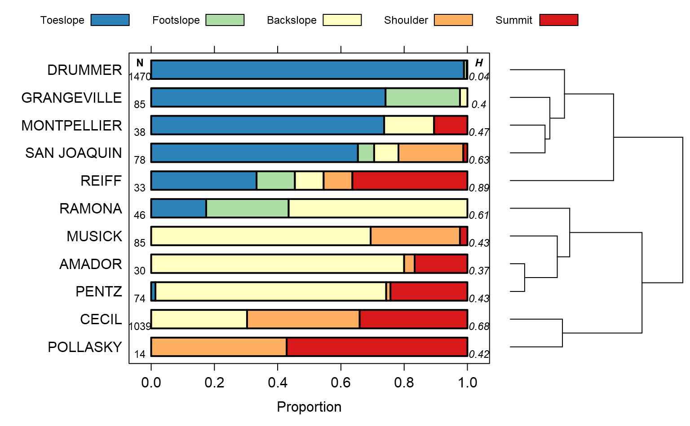

A unique display of hillslope position probability.
vizHillslopePosition(x, s = NULL, annotations = TRUE, annotation.cex = 0.75)
| x |
|
|---|---|
| s | an optional soil series name, highlighted in the figure |
| annotations | logical, add number of record and normalized Shannon entropy values |
| annotation.cex | annotation label scaling factor |
a list with the following elements:
lattice object (the figure)
ordering of soil series
See the Soil Series Query Functions tutorial for more information.
D.E. Beaudette
# \donttest{ if(requireNamespace("curl") & curl::has_internet() & require(aqp) & require(soilDB)) { # soils of interest s.list <- c('musick', 'cecil', 'drummer', 'amador', 'pentz', 'reiff', 'san joaquin','montpellier','grangeville','pollasky','ramona') # fetch and convert data into an SPC s <- fetchOSD(s.list, extended=TRUE) res <- vizHillslopePosition(s$hillpos) print(res$fig) }# }